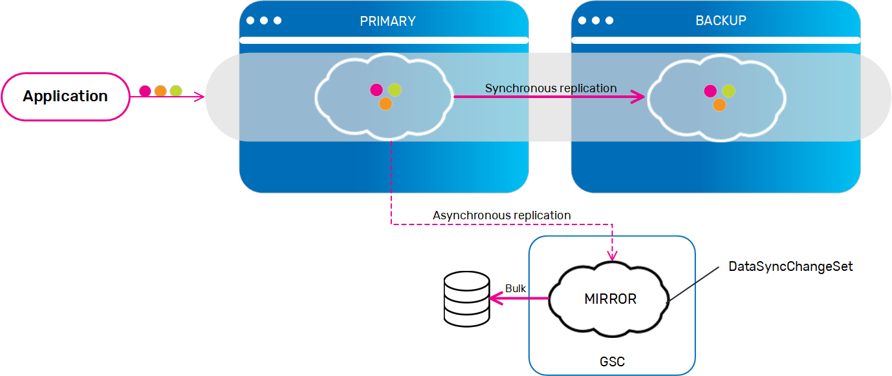

A SpaceSynchronizationEndpoint implementation can make use of the Change API and support change operation, this way allowing the network utilization to be more optimized by sending only the change set to the mirror service instead of the fully updated object. By default the mirror service starts in a mode which does not support change, hence, any change operation done on the space is being replicated as a regular update to the mirror service. You could provide an implementation that does support change and configure the space to send the supported change operations to the mirror with only the required data to apply the change. Following is an example of how can one obtain the change set from a DataSyncOperation.
Asynchronous Persistence

public class MySpaceSynchronizationEndpoint extends SpaceSynchronizationEndpoint {
@Override
public void onOperationsBatchSynchronization(OperationsBatchData batchData){
for (DataSyncOperation dataSyncOperation : batchData.getBatchDataItems()){
switch(dataSyncOperation.getDataSyncOperationType()){
case CHANGE:
DataSyncChangeSet dataSyncChangeSet = ChangeDataSyncOperation.getChangeSet(dataSyncOperation);
for (ChangeOperation changeOperation : dataSyncChangeSet.getOperations()){
switch(changeOperation.getName()){
case IncrementOperation.NAME:
String path = IncrementOperation.getPath(changeOperation);
int delta = IncrementOperation.getDelta(changeOperation).intValue();
// ... handle increment operation
break;
case SetOperation.NAME:
String path = SetOperation.getPath(changeOperation);
Object value = SetOperation.getValue(changeOperation);
// ... handle set operation
break;
case ...
}
}
break;
...
}
}
}
..
}
Once you have an implementation that supports some or all of the change operations, the space need to be configured in a way which specifies which change operations are supported by the mirror, and that is in order for it to know which operations can be sent to the mirror as change and which operations needs to be converted to full update. following an example of how to configure a space with mirror which supports: set, unset and increment change operations.
<os-core:embedded-space id="space" space-name="mySpace" mirror="true">
<os-core:properties>
<props>
<prop key="cluster-config.mirror-service.change-support">
set, unset, increment
</prop>
</props>
</os-core:properties>
</os-core:embedded-space>
Here is the full list of change operations:
| ChangeSet operation | Mirror Change Support Name | ChangeOperation class | Comment |
|---|---|---|---|
| ChangeSet.set | set | SetOperation | |
| ChangeSet.unset | unset | UnsetOperation | |
| ChangeSet.increment | increment | IncrementOperation | |
| ChangeSet.decrement | increment | IncrementOperation | will be increment with negative value |
| ChangeSet.addToCollection | addToCollection | AddToCollectionOperation | |
| ChangeSet.addAllToCollection | addAllToCollection | AddAllToCollectionOperation | |
| ChangeSet.removeFromCollection | removeFromCollection | RemoveFromCollectionOperation | |
| ChangeSet.putInMap | putInMap | PutInMapOperation | |
| ChangeSet.removeFromMap | removeFromMap | RemoveFromMapOperation |
By default, the change result will only contain the number of entries which were changed during the operation. In order to get more details (requires more network traffic) the ChangeModifiers.RETURN_DETAILED_RESULTS should be used. When using this modifier the result will contain the list of entries which were changed including the change affect that took place on each entry. You can use this in order to know what was the affect, for instance what is the value of a numeric property after the increment operation was applied on it.
GigaSpace space = // ... obtain a space reference
Uuid id = ...;
IdQuery<Account> idQuery = new IdQuery<Account>(Account.class, id, routing);
ChangeResult<Account> changeResult = space.change(idQuery, new ChangeSet().increment("balance.euro", 5.2D), ChangeModifiers.RETURN_DETAILED_RESULTS);
for(ChangedEntryDetails<Account> changedEntryDetails : changeResult.getResults()) {
//Will get the first change which was applied to an entry, in our case we did only single increment so we will have only one change operation.
//The order is corresponding to the order of operation applied on the ChangeSet.
ChangeOperationResult operationResult = changedEntryDetails.getChangeOperationsResults().get(0);
double newValue = IncrementOperation.getNewValue(operationResult);
...
}
When using Replication Filter, one can extract the DataSyncChangeSet from the IReplicationFilterEntry in the same way as extracting it from a DataSyncOperation by using the
ChangeDataSyncOperation class in the following way:
public class MyReplicationFilter implements IReplicationFilter {
...
@Override
public void process(int direction, IReplicationFilterEntry replicationFilterEntry,
String remoteSpaceMemberName) {
if (replicationFilterEntry.getOperationType() == ReplicationOperationType.CHANGE){
DataSyncChangeSet changeSet = ChangeDataSyncOperation.getChangeSet(replicationFilterEntry);
// ... do something in filter
}
}
}
Space Filter can intercept a FilterOperationCodes.BEFORE_CHANGE and FilterOperationCodes.AFTER_CHANGE events, and in that events the DataSyncChangeSet can be extracted from the ISpaceFilterEntry using the ChangeDataSyncOperation.getChangeSet(IFilterEntry) method.